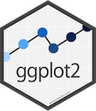

This portal is designed and built using the following principles:
- everything has to be version controlled
- adopt KISS principle: Keep It Simple and Stupid.
- build a static website
- use open source tools whenever possible
Open source/Free tools and services we use
- git
 :
a distributed version control system.
:
a distributed version control system. - Hugo
 :
a static site generator.
:
a static site generator. - D3
 :
a JavaScript library for producing dynamic, interactive data visualizations in web browsers.
:
a JavaScript library for producing dynamic, interactive data visualizations in web browsers. - GitHub Pages
 :
a service by GitHub whereby you can have a website served on the Internet for every user, organization or repository.
:
a service by GitHub whereby you can have a website served on the Internet for every user, organization or repository. - GitHub Organizations :
a service by GitHub for groups of people.
- Travis CI : a hosted, distributed continuous integration service used to build and test software projects.
- R
 :
a free software environment for statistical computing and graphics.
:
a free software environment for statistical computing and graphics. - Tidyverse
 :
is an opinionated collection of R packages designed for data science. Among them:
:
is an opinionated collection of R packages designed for data science. Among them:
- dplyr
 :
a grammar of data manipulation, providing a consistent set of verbs that help you solve the most common data manipulation challenges.
:
a grammar of data manipulation, providing a consistent set of verbs that help you solve the most common data manipulation challenges. - readr
 :
a fast and friendly way to read rectangular data (like csv, tsv, and fwf).
:
a fast and friendly way to read rectangular data (like csv, tsv, and fwf). - ggplot2 : a system for declaratively creating graphics, based on The Grammar of Graphics.
- dplyr
- Google Charts
 :
an interactive Web service that creates graphical charts from user-supplied information.
:
an interactive Web service that creates graphical charts from user-supplied information. - Plotly
 :
tools for composing, editing, and sharing interactive data visualization via the Web.
:
tools for composing, editing, and sharing interactive data visualization via the Web.
Scaffolding
This website is a statically generated one: there is no CMS, no database, no
authorization server behind it. It is just a bunch of HTML pages. These pages
are generate by
Hugo  .
.
Hugo is a static site generator, i.e. it takes a description, generally a template, of the pages you want to build and generates the relevant HTML.
Repositories
We use git  as our (distributed) version control system.
And we selected GitHub as the central server for our git repositories.
as our (distributed) version control system.
And we selected GitHub as the central server for our git repositories.
In order to group all our repositories we created a
GitHub Organizations  called
called euctrl-pru. It is a sort of company/team account.
For the website we have two repositories one for the source pages and one for
the compiled ones.
The source repository is called website the compiled repository is named
euctrl-pru.github.io.
The reason we have these two repositories is related to the fact we use plug-ins that would not be allowed to run in the automatic setup GitHub provides out-of-the-box.
Web hosting
The name euctrl-pru.github.io for the repository of the compiled website is
due to a fantastic service GitHub provides:
GitHub Pages  .
When using GitHub Pages any repository named
.
When using GitHub Pages any repository named <username or organization name>.github.io will be served on the web by GitHub web servers.
And if you want your site to be visible under your own domain name you just need
to specify it in a file called CNAME and the magic will happen.
(Ok, there are few other things to setup but it is soooo simple.)
And our CNAME points to ansperformance.eu.
Continuous Integration and Deployment
We use Travis CI to automatically
build every commit in our release branch (any branch name starting with
2016<2 digit month number>-release). These build can include tests to be executed in order to garantee a certain level of quality…build every
masterbranch commit and if successful (and the commit is properly tagged) deploy the generated site. This is a way to publish our releases and make them available on the Internet. (Less work for the Humans more boring work for the Machines)